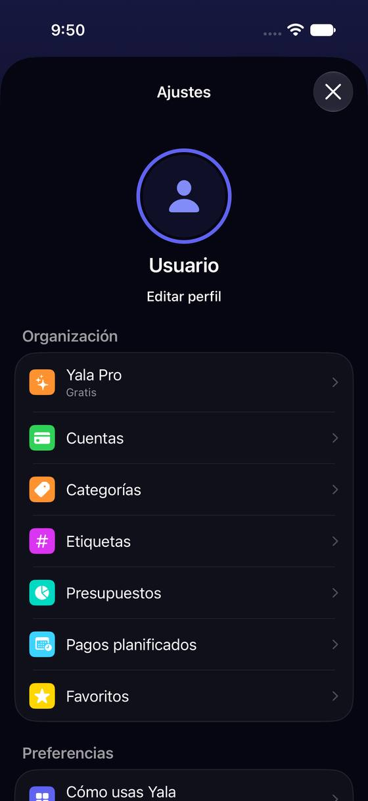
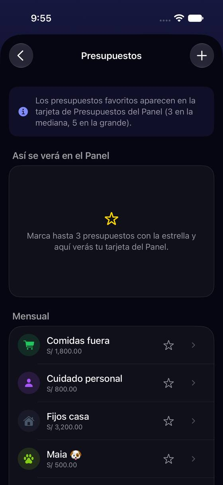
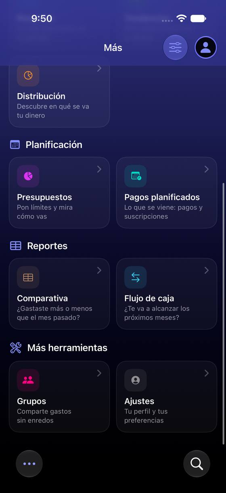

«Presupuestos» de Ajustes no abre tus presupuestos y «Pagos planificados» te saca de Ajustes
Hoy
Capturas del simulador (app de origin/2.3, semillas de prueba). Pasos hoy: Buscar sus presupuestos desde Ajustes: no se puede; la fila con ese nombre abre otra cosa




De dónde sale
- Código
ProfileView.organizacionSection:.budgetsabreBudgetsFavoritesSettingsView; «Pagos planificados» hacedismiss()y.navigate(.scheduledPayments). - Captura Captura g09: «Los presupuestos favoritos aparecen en la tarjeta de Presupuestos del Panel (3 en la mediana, 5 en la grande)».
- Captura Captura a02: al tocar «Pagos planificados» la hoja de Ajustes se cierra.
Las opciones
De 3 a 5 alternativas con el mismo caso. Desliza cada recorrido; el anillo cian marca dónde toca Andrea.
Cada fila, con el nombre de lo que abre y en su sitio
«Presupuestos» de Ajustes no abre tus presupuestos: elige cuáles salen en la tarjeta del Panel. Pasa a llamarse «Presupuestos en el Panel» y vive en Configurar Panel (zona 30), junto a lo demás que decide qué enseña el Panel. «Pagos planificados» sale de Ajustes: hoy cierra Ajustes y te deja en otra pestaña. «Favoritos» pasa a «Registros favoritos», para que no se confunda con los presupuestos favoritos.
A favor
- Cada fila hace lo que dice: Andrea no se pierde buscando sus presupuestos donde no están.
- Ajustes adelgaza en tres filas sin perder nada.
- Lo del Panel se decide en un solo sitio (Configurar Panel).
En contra
- Quien entraba por Ajustes › Presupuestos para las estrellas tiene que aprender el camino nuevo.
- Toca dos zonas (Ajustes y Configurar Panel, zona 30).
Las filas abren lo que dicen, dentro de Ajustes
«Presupuestos» abre la lista de tus presupuestos dentro de Ajustes (la misma de Planificación), con la estrella del Panel en cada fila; «Pagos planificados» abre la lista de pagos empujada en Ajustes, sin cerrar la hoja ni cambiar de pestaña.
A favor
- Lo que se busca está donde se busca, sin cambiar de pestaña.
- Las estrellas se explican junto a los presupuestos.
En contra
- Duplica dos listas grandes que ya viven en Planificación: dos sitios para crear y editar lo mismo.
- Ajustes sigue con 31 filas.
- Las hojas de Ajustes y las de Planificación tendrían que comportarse igual.
Se quedan donde están, con un subtítulo honesto
Cambio de texto solamente: «Presupuestos» dice debajo «Cuáles salen en el Panel», «Pagos planificados» dice «Se abre en Planificación ↗» y «Favoritos» dice «Registros que repites».
A favor
- Es solo texto: se hace en una tarde.
- Avisa antes de saltar de pestaña.
En contra
- Sigue habiendo una fila «Presupuestos» que no abre presupuestos: el subtítulo se lee poco (P3).
- Deja la mezcla de Organización (Pro, cuentas, panel, planificación) como está.
Lado a lado
La última pantalla de cada recorrido, frente a hoy.
Comparación
| Opción | Pasos para el caso (maqueta) | Esfuerzo | Riesgo | Reabre |
|---|---|---|---|---|
| Hoy | Buscar sus presupuestos desde Ajustes: no se puede; la fila con ese nombre abre otra cosa | — | — | — |
| B1 · Cada fila, con el nombre de lo que abre y en su sitio | Marcar un presupuesto del Panel: Panel › Configurar › Presupuestos en el Panel › estrella (4 toques, hoy 3) | bajo | bajo | — |
| B2 · Las filas abren lo que dicen, dentro de Ajustes | Ver presupuestos desde Ajustes: 2 toques (hoy no se puede) | medio | medio | — |
| B3 · Se quedan donde están, con un subtítulo honesto | Igual que hoy | bajo | bajo | — |
Lente de perfiles
Perfiles simulados, no entrevistas Los siete perfiles de la revisión del usuario nuevo, usados como lentes. riesgo alto de trabarse · medio · bajo.
| Perfil | Hoy | B1 | B2 | B3 |
|---|---|---|---|---|
| P1 · Migrante de Excel | busca presupuestos ahí | nombres exactos | lo encuentra | lee el subtítulo |
| P2 · Principiante abrumado | no entiende las estrellas | no se confunde | dos sitios | aún confunde |
| P3 · Anotador rápido que no lee | salta de pestaña | — | — | no lee subtítulos |
| P4 · Experto de otra app | dos «Presupuestos» | cada cosa en su sitio | duplicado | — |
| P5 · Llega por una invitación de grupo | no los ve | — | — | — |
| P6 · Varias monedas y tarjeta | — | — | — | — |
| P7 · Texto grande, a veces en iPad | pierde el sitio | menos filas | pantallas largas | texto pequeño |
Recomendación: B1
Llamar a cada fila por lo que abre y llevar lo del Panel a Configurar Panel quita la confusión de raíz y adelgaza Ajustes. B3 vale como parche de una tarde si B1 tiene que esperar a la zona 30.
Qué decide Jürgen
- ¿«Presupuestos en el Panel» pasa a Configurar Panel y «Pagos planificados» sale de Ajustes (B1)?
- ¿«Favoritos» pasa a «Registros favoritos»?
Revisión por vistas 2.3 · Perfil, Más, Ajustes generales, Pro y ayuda. Maquetas en HTML con datos ficticios: no son la app. Pasos contados sobre las maquetas; los de «Hoy», en el simulador o en el código citado.